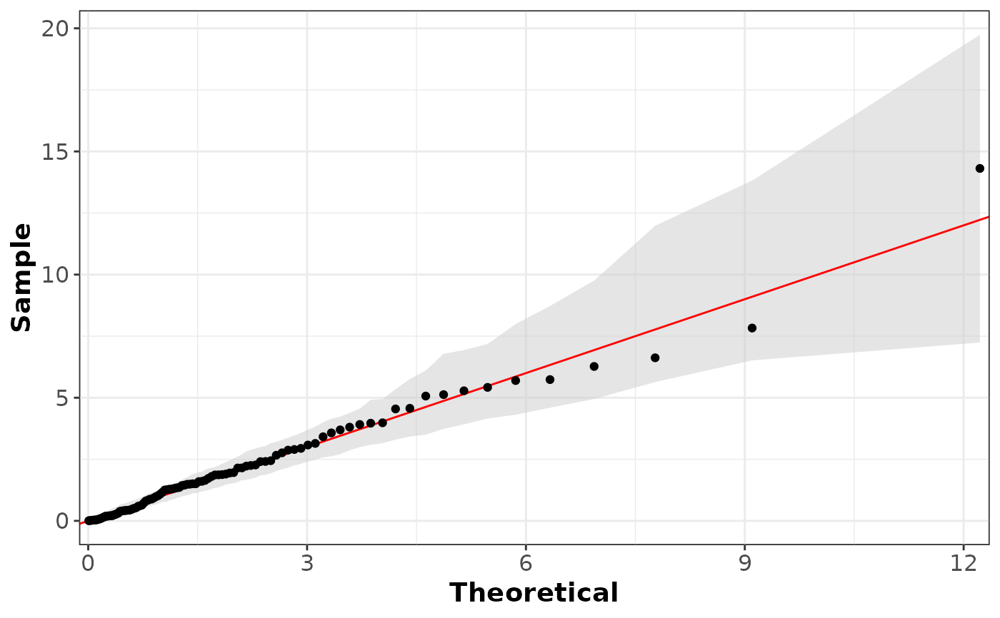

Generate ggplot diagnostic plots for cecl_marg object.
# S3 method for class 'cecl_marg'
ggplot(
data = NULL,
mapping = ggplot2::aes(),
which = c("qq", "pp", "hist", "return", "transformed"),
loc,
var,
cond_var = NULL,
mult_col = "name",
plot_dens = TRUE,
return_periods = c(1.5, 2.5, 5, 10, 20, 50, 100, 200),
nboot = 200,
refit = FALSE,
ci_quantiles = c(0.025, 0.975),
log_scale = TRUE,
...,
environment = parent.frame()
)object of class cecl_marg.
Not used.
Type of plot to generate. Choices are "qq" for QQ plot,
"pp" for PP plot, "hist" for histogram of residuals, "return" for
return level plot, and "transformed" for a plot of the Laplace-scale
transformed data. Several plots can also be produced.
Location name to plot.
Variable name to plot.
Optional conditioning variable for plotting Laplace transformed data, Default NULL.
Name of the column representing locations, default "name".
Logical indicating whether to plot histogram on top of density estimate, Default TRUE.
Return periods for return level plot, Default c(1.5, 2.5, 5, 10, 20, 50, 100, 200).
Number of bootstrap samples for confidence intervals, set to NULL for none confidence interval, Default: 200.
Logical indicating whether to refit GPD for each bootstrap sample when calculating uncertainty envelopes, Default FALSE.
Quantiles for confidence intervals, Default c(0.025, 0.975).
Logical indicating whether to use log scale for return level plot x-axis, Default TRUE.
Additional arguments for main ggplot2 plotting function.
Parent frame environment.
ggplot diagnostic plot for cecl_marg object.
library(ggplot2)
# simulate some data
set.seed(123)
n_locs <- 5
n <- 1000
vars <- c("X1", "X2")
df <- do.call(
rbind,
lapply(1:n_locs, function(i) {
data.frame(
X1 = rgpd(n, u = 0, sigma = 1, xi = 0.2),
X2 = rgpd(n, u = 0, sigma = 2, xi = -0.1),
name = paste0("loc_", i)
)
})
)
# fit marginal models with quantile thresholding and ISMEV GPD fits
marg_fit <- cecl_marg(
df,
thresh_method = "quantile",
thresh_args = 0.9,
marg_method = "ismev",
ncores = 1
)
# plot for a specific location and variable
ggplot(marg_fit, which = "qq", loc = "loc_1", var = "X1")
